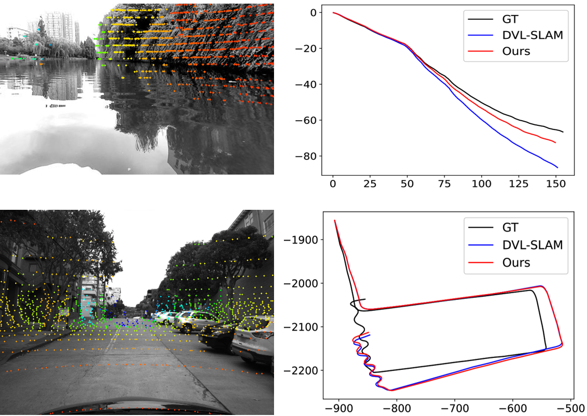
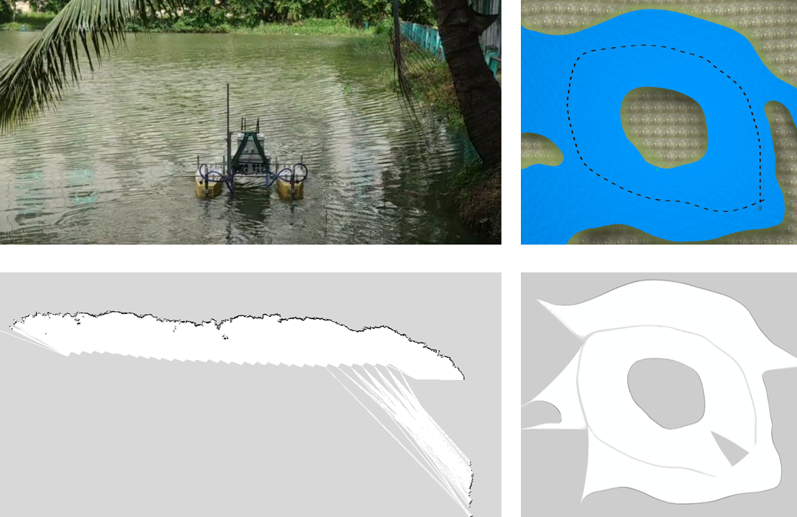
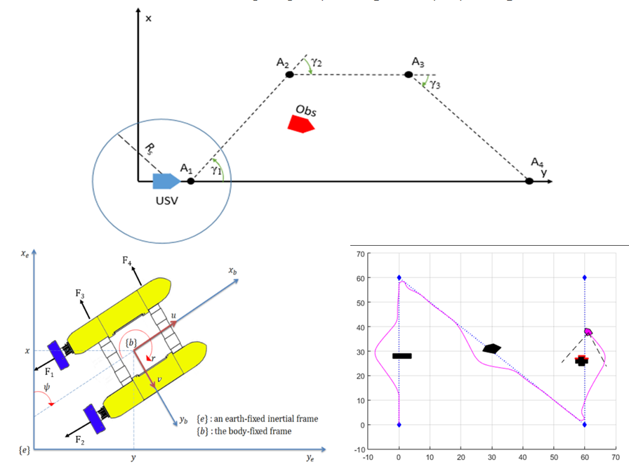

吀嘲
碎羅技師電固興趣貝𠊛𣛠、處理信號、理說調遣吧系統𣴛。碎完成文憑技師（才能）吧碩士（硏究）𧗱『技術調遣吧自動化』在場大學百科、大學國家城庯胡志明（百科、國大胡志明）。碎曾𫜵助理研究在 VIAM Lab 𠁪現寔化可能自行朱𡗉類方便空𠊛梩。𣇞低、𥪝𦠘𠻀技師份𣠳在 VinAI、碎向𦤾設計吧改進𡗉份𣠳聰明朱各方便𧼋憑電。
𨑗張尼固体尋𧡊出版科學𧵑碎共段𥱬形掟兼。
塘引：
 GitHub－
GitHub－
 Google Scholar－
Google Scholar－
 LinkedIn
LinkedIn
聯繫：qha258@gmail.com
點扨預案
同定圖直接澦𨑗結合𣛠影吧𣛠𢭯激光𥪝媒場外𡗶
段𥱬形尼鋪演效能𧵑𠬠系同定圖直接、結合視覺吧激光、𥪝多樣各媒場外𡗶。𥪝系統固提出解術攝重形改進、解術攝重𡌽𩄲𮞊吧解術最優𨷯擻澦𨑗圖示因素。結合貝構築與料𣘃喀朝加增抵管理版圖、系統㐌證明𧼋沫𥪝𡗉場合刻孽。工程尼羅𠬠份論文碩士𧵑碎在百科、國大胡志明𠓨𢆥 2022。
模倣𢵉塘尋𥆾𣦎吧儞物捍集䋎斷朱船空𠊛梩
段𥱬形尼鋪演格船空𠊛梩𢵉塘定𠻿蹺𠄧方法參數化：𣦎咍陛條。部引塘𧵑船爲遵守律尋𥆾𣦎𢧚出𧣳倒梩參照抵部調遣跌𠴊倣𢵉𧣳。抵儞物捍律集䋎斷得壓用、𠚢決定澦𨑗法𢵋自𣛠𢭯激光𠄩朝。工程尼羅𠬠份合作𡧲碎吧 VIAM Lab 在百科、國大胡志明𠁪現寔化可能自行欺觀測媒場朱船空𠊛梩。
同定圖朱𣛠𢭯激光𠄩朝𥪝媒場外𡗶
段𥱬形尼鋪演效能𧵑𠬠系同定圖朱𣛠𢭯激光𠄩朝𥪝𪥘󠄁媒場人造吧寔際。通過盡用技術打重數𥾽凭、最優𨷯擻跌、對𠁔𢭯𮞊吧併算雙雙、系統空仍運行穩定𥪝𡗉區域混雜𦓡𡀳答應𦀾𫃚時間寔。工程尼羅𠬠份論文技師𧵑碎在百科、國大胡志明𠓨𢆥 2020。
引塘吧調遣朱車調向自動交行
段𥱬形尼鋪演格𠬠車調向自動交行認令自交面圖畫𠊛用監察吧自動遴餅𬧐的𦤾懞㦖。𠁪復回位置吧𧣳向、車附屬𠓨𠬠部定位衛星𢵋動時間寔吧𠬠部參照𧣳向。性能自梩𢖖󠄁妬得現寔化憑部𢵉塘尋𥆾𣦎吧部調遣微積分比例𧣳倒梩。工程尼羅𠬠份預案𧵑碎𥪝章程生員硏究科學科電電子 2019 在百科、國大胡志明。
出版科學

IMU-Assisted Direct Visual-Laser Odometry in Challenging Outdoor Environments
(Q.-H. Pham, N.-H. Tran and T.-D. Nguyen),
in International Conference on Green Technology and Sustainable Development, Springer, 2023, pp. 497-508.
〔塘引〕
 〔𣜿信〕
〔𣜿信〕
 VIAM-USV2000: An Unmanned Surface Vessel with Novel Autonomous Capabilities in Confined Riverine Environments
(N.-H. Tran, Q.-H. Pham, J.-H. Lee and H.-S. Choi),
in Machines, vol. 9, no. 7, p. 133, 2021.
VIAM-USV2000: An Unmanned Surface Vessel with Novel Autonomous Capabilities in Confined Riverine Environments
(N.-H. Tran, Q.-H. Pham, J.-H. Lee and H.-S. Choi),
in Machines, vol. 9, no. 7, p. 133, 2021.
〔塘引〕
〔𣜿信〕

Online Robust Sliding-Windowed LiDAR SLAM in Natural Environments
(Q.-H. Pham, N.-H. Tran, T.-T. Nguyen and T.-P. Tran),
in 2021 International Symposium on Electrical and Electronics Engineering (ISEE), Ho Chi Minh City, 2021.
〔塘引〕
〔𣜿信〕

Implementation and Enhancement of Set-Based Guidance by Velocity Obstacle along with LiDAR for Unmanned Surface Vehicles
(N.-H. Tran, M.-H. Vu, T.-C. Nguyen, M.-T. Phan and Q.-H. Pham),
in 2020 5th International Conference on Green Technology and Sustainable Development (GTSD), Ho Chi Minh City, 2020.
〔塘引〕